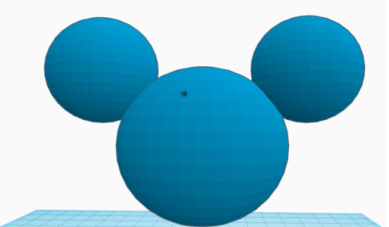

Mickey Mouse (Deceased)
I was experimenting in Tinkercad and I accidentally shot Mickey Mouse in the face. Unfortunately, he didn't live. These are photos that were taken after his death. All jokes aside, this project was more of a test to figure out the basics of Tinkercad. By completing it, I learned how to use spacing and shape editing properly in order to create a realistic 3D image. Though it is relatively simple, it is what started most of my work throughout the Tinkercad unit.
Here are other projects that I worked on during the Tinkercad Unit. These especially helped me learn everything Tinkercad had to offer as they were more or less made to be tutorials. In them, I was shown how to create holes, how to increase entire shapes in size, and more. They were very useful for my Tinkercad Pimpmobile, specifically.